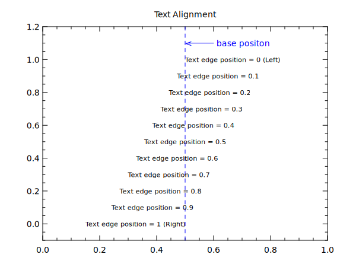

title "Text Alignment"
div 1 1
box 0 1 -0.1 1.2
line 0.5 0.5 -0.1 1.3 (lc:blue lt:dash)
line 0.5 0.6 1.1 1.1 (lc:blue ae:2)
text 0.61 1.1 "base positon" (tc:blue)
do tpos 0 1 0.1 ; # text edge positon
@ y=1-[tpos]
if [tpos] == 0
@ str = "[tpos] (Left)"
elif [tpos] == 1
@ str = "[tpos] (Right)"
else
@ str = "[tpos]"
fi
text 0.5 [y] "Text edge position = [str]" (tp:[tpos] ts:0.8)
end
